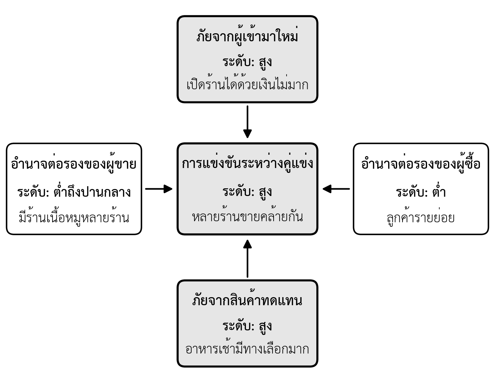
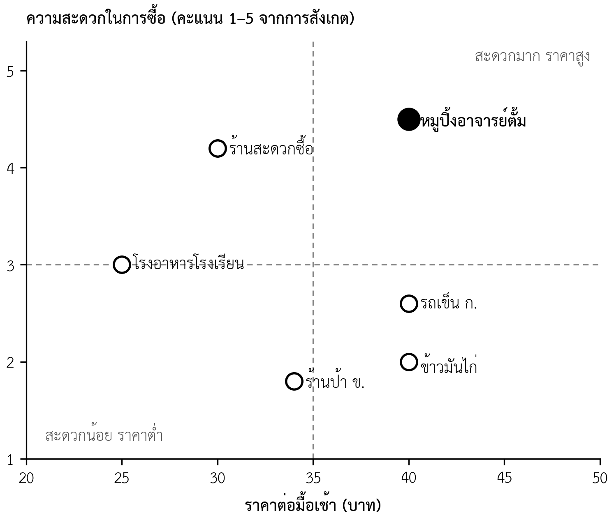

- จำแนกคู่แข่งทางตรง คู่แข่งทางอ้อม และผู้ที่อาจเข้ามาแข่งได้
- เลือกวิธีเก็บข้อมูลคู่แข่งที่เหมาะสมและอยู่ในขอบเขตจรรยาบรรณได้
- สร้างตารางเปรียบเทียบคู่แข่งแบบถ่วงน้ำหนักจากมุมมองของลูกค้าได้
- วิเคราะห์ความน่าสนใจของอุตสาหกรรมด้วยแรงกดดันห้าประการได้
- วิเคราะห์ SWOT จากหลักฐาน และสร้างทางเลือกกลยุทธ์ด้วยตาราง TOWS ได้
- สร้างแผนผังตำแหน่งทางการตลาด และระบุตำแหน่งที่ธุรกิจของกลุ่มจะยืนได้
- อธิบายว่าคู่แข่งและแรงกดดันในอุตสาหกรรมเปลี่ยนไปอย่างไรตามระยะของเส้นทางสู่เป้าหมาย
- เขียนส่วนการวิเคราะห์คู่แข่งในแผนธุรกิจ (ใบงานที่ 4 ส่วนที่ 2) ได้
ความนำ
บทที่ 4 ตอบว่าตลาดใหญ่เพียงใด แต่ตลาดใหญ่ไม่ได้แปลว่าธุรกิจจะได้ส่วนแบ่ง ลูกค้าทุกคนในตลาดกำลังซื้อจากใครสักคนอยู่แล้ว หรือกำลังแก้ปัญหาของตนด้วยวิธีใดวิธีหนึ่งอยู่แล้ว ธุรกิจใหม่จึงต้องตอบให้ได้ว่าลูกค้าจะเปลี่ยนมาซื้อจากเราเพราะอะไร และคู่แข่งจะตอบโต้อย่างไร ผู้อ่านแผนธุรกิจทุกกลุ่มจะถามคำถามนี้ และแผนที่ตอบว่า "ไม่มีคู่แข่ง" จะเสียความน่าเชื่อถือทันที (ข้อผิดพลาดที่ 3 ในตารางที่ 1.8)
บทนี้ยังอยู่ในขั้นตอนที่สามของกระบวนการจัดทำแผน คือการเก็บข้อมูลลูกค้าและตลาด เริ่มจากการระบุว่าใครคือคู่แข่ง วิธีเก็บข้อมูลคู่แข่งอย่างมีจรรยาบรรณ และการเปรียบเทียบคู่แข่งจากมุมมองของลูกค้า จากนั้นขยายไปสู่ภาพของอุตสาหกรรมด้วยแรงกดดันห้าประการ สรุปสถานการณ์ด้วย SWOT แปลงเป็นทางเลือกกลยุทธ์ด้วย TOWS และหาตำแหน่งที่ธุรกิจจะยืนได้ด้วยแผนผังตำแหน่งทางการตลาด ท้ายบทพิจารณาว่าเมื่อร้านหมูปิ้งเดินไปสู่เป้าหมายวันละ 3 ล้านบาท คู่แข่งเปลี่ยนไปอย่างไร เนื้อหาบทนี้เป็นส่วนที่สองของใบงานที่ 4 และเป็นฐานของการกำหนดกลยุทธ์ในบทที่ 6
5.1 คู่แข่งคือใคร
คู่แข่งแบ่งได้เป็นสามกลุ่ม กลุ่มแรกคือคู่แข่งทางตรง (direct competitor) ซึ่งขายสินค้าหรือบริการแบบเดียวกันให้ลูกค้ากลุ่มเดียวกัน เช่น ร้านหมูปิ้งอีกร้านหน้าโรงเรียนเดียวกัน กลุ่มที่สองคือคู่แข่งทางอ้อม (indirect competitor) ซึ่งขายสิ่งที่ต่างออกไป แต่ตอบงานเดียวกันของลูกค้า เช่น ร้านสะดวกซื้อที่ขายขนมปังและนมเป็นอาหารเช้า กลุ่มที่สามคือผู้ที่อาจเข้ามาแข่ง (potential entrant) ซึ่งยังไม่อยู่ในตลาดวันนี้ แต่เข้ามาได้ง่ายถ้าเห็นว่าตลาดทำกำไร
แนวคิดงานที่ลูกค้าต้องการให้สำเร็จในบทที่ 3 เป็นเครื่องมือที่ดีที่สุดในการหาคู่แข่งทางอ้อม เพราะคู่แข่งที่แท้จริงคือทุกทางเลือกที่ลูกค้าใช้ทำงานเดียวกัน (Christensen et al., 2016) วิธีปฏิบัติคือกลับไปดูคอลัมน์ "วิธีปัจจุบัน" ในตารางสรุปผลการสัมภาษณ์ (ตารางที่ 3.10) ทุกวิธีที่ลูกค้าใช้อยู่คือคู่แข่ง รวมถึงทางเลือกที่ไม่ใช่การซื้อ เช่น การทำอาหารเช้าเองที่บ้าน หรือการไม่กินอาหารเช้าเลย
ตารางที่ 5.1 คู่แข่งสามกลุ่มและคำถามที่ใช้ระบุ
| กลุ่มคู่แข่ง | นิยาม | คำถามที่ใช้ระบุ | ตัวอย่างจากกรณีศึกษา |
|---|---|---|---|
| คู่แข่งทางตรง | ขายสิ่งเดียวกันให้ลูกค้ากลุ่มเดียวกัน | ถ้าร้านเราปิด ลูกค้าจะไปซื้อหมูปิ้งที่ไหน | หมูปิ้งรถเข็น ก. หมูปิ้งร้านป้า ข. |
| คู่แข่งทางอ้อม | ขายสิ่งที่ต่างกัน แต่ตอบงานเดียวกัน | ลูกค้าใช้วิธีใดอีกเพื่อให้ได้อาหารเช้าที่สะดวก | ร้านสะดวกซื้อ ร้านข้าวมันไก่ โรงอาหารโรงเรียน |
| ผู้ที่อาจเข้ามาแข่ง | ยังไม่อยู่ในตลาด แต่เข้ามาได้ | ถ้าร้านเราขายดี ใครจะเปิดร้านแบบเดียวกันได้ง่าย | ผู้ค้าหาบเร่รายใหม่ แอปพลิเคชันส่งอาหารที่ขยายบริการอาหารเช้า |
ข้อผิดพลาดที่พบบ่อยคือการนับเฉพาะคู่แข่งทางตรง แล้วสรุปว่าคู่แข่งมีน้อย ในกรณีศึกษา คู่แข่งทางตรงมีเพียงสองร้าน แต่หัวข้อ 5.3 จะแสดงว่าคู่แข่งที่ใกล้ที่สุดในสายตาลูกค้ากลับเป็นร้านสะดวกซื้อ ซึ่งไม่ได้ขายหมูปิ้งเลย
5.2 การเก็บข้อมูลคู่แข่งอย่างมีจรรยาบรรณ
ข้อมูลคู่แข่งที่ใช้ในแผนต้องมีที่มาเช่นเดียวกับข้อมูลตลาด และต้องได้มาโดยวิธีที่ชอบธรรม ตารางที่ 5.2 แสดงวิธีเก็บข้อมูลที่นิสิตใช้ได้ สิ่งที่ได้ และขอบเขตที่ห้ามข้าม หลักทั่วไปคือ ข้อมูลที่ลูกค้าทั่วไปเห็นได้ ซื้อได้ หรืออ่านได้จากแหล่งสาธารณะ ใช้ได้ ส่วนข้อมูลที่ต้องได้มาด้วยการหลอกลวง การแอบอ้าง หรือการละเมิดความลับ ห้ามใช้ ทั้งในทางจรรยาบรรณและทางกฎหมาย (ตารางที่ 1.11)
ตารางที่ 5.2 วิธีเก็บข้อมูลคู่แข่งและขอบเขตจรรยาบรรณ
| วิธี | สิ่งที่ได้ | ขอบเขตที่ห้ามข้าม |
|---|---|---|
| สังเกตหน้าร้าน | ราคา เมนู ความยาวคิว จำนวนลูกค้าต่อช่วงเวลา | ไม่ถ่ายภาพลูกค้าหรือพนักงานโดยไม่ได้รับอนุญาต |
| ซื้อเพื่อทดลอง | รสชาติ ขนาด ความเร็วในการบริการ บรรจุภัณฑ์ | ซื้อในฐานะลูกค้าทั่วไป ไม่แอบอ้างเป็นผู้ตรวจหรือเจ้าหน้าที่ |
| รีวิวและสื่อสังคมออนไลน์ | สิ่งที่ลูกค้าชมและบ่น โปรโมชัน | รายงานเป็นภาพรวม ไม่นำข้อมูลส่วนตัวของผู้รีวิวมาเปิดเผย |
| ถามลูกค้าระหว่างสัมภาษณ์ | เหตุผลที่ลูกค้าเลือกหรือเลิกใช้คู่แข่ง | ถามเรื่องประสบการณ์ของลูกค้า ไม่ขอข้อมูลภายในของคู่แข่ง |
| DBD DataWarehouse+ | รายได้และงบการเงินของคู่แข่งที่จดทะเบียนนิติบุคคล | ใช้ข้อมูลตามที่เผยแพร่ ไม่ตีความเกินข้อมูล |
| รายงานอุตสาหกรรม ข่าว | ขนาดและแนวโน้มของคู่แข่งรายใหญ่ | ตรวจด้วยเกณฑ์ CRAAP (ตารางที่ 4.9) |
ในเล่มแผนธุรกิจ นิสิตต้องเขียนถึงคู่แข่งอย่างเป็นธรรม ไม่ใช้ถ้อยคำดูหมิ่น และไม่กล่าวอ้างข้อบกพร่องของคู่แข่งที่ไม่มีหลักฐาน การเขียนว่า "ร้าน ก. สกปรก" โดยไม่มีหลักฐานเป็นทั้งปัญหาด้านความน่าเชื่อถือและอาจเป็นการหมิ่นประมาท ควรเขียนตามสิ่งที่สังเกตได้จริง เช่น "จากการสังเกตห้าวัน ร้าน ก. ไม่มีที่ล้างมือสำหรับผู้ปิ้ง" ในเล่มที่ส่งอาจารย์ นิสิตอาจใช้ชื่อร้านจริงได้ แต่ถ้าแผนจะเผยแพร่ภายนอก ควรใช้รหัสแทนชื่อร้านของคู่แข่งรายย่อย
วิธีที่ให้ข้อมูลตรงที่สุดสำหรับธุรกิจขนาดเล็กคือการซื้อเพื่อทดลอง เพราะได้ประสบการณ์เดียวกับลูกค้าจริง แต่ข้อมูลจะใช้ได้ก็ต่อเมื่อบันทึกเป็นระบบ ซื้อในเวลาเดียวกัน ด้วยรายการเดียวกัน และบันทึกทันทีหลังซื้อ ตารางที่ 5.3 แสดงแบบบันทึกที่ใช้ในรายวิชา ควรซื้อซ้ำอย่างน้อยสามครั้งต่อร้านในวันต่างกัน เพราะการซื้อครั้งเดียวอาจเจอวันที่ร้านคนน้อยหรือคนมากผิดปกติ
ตารางที่ 5.3 ตัวอย่างแบบบันทึกการซื้อเพื่อทดลอง (กรณีศึกษาสมมติ)
| วันและเวลา | ร้าน | รายการที่ซื้อ | ราคา | เวลารอ | สังเกตเห็น |
|---|---|---|---|---|---|
| จันทร์ 06.45 | รถเข็น ก. | หมู 3 ไม้ ข้าวเหนียว 1 | 40 บาท | 4 นาที | ไม่รับสั่งล่วงหน้า ปิ้งต่อเนื่อง |
| จันทร์ 06.55 | ร้านป้า ข. | หมู 3 ไม้ ข้าวเหนียว 1 | 34 บาท | 9 นาที | ไม้เล็กกว่า คิวยาวช่วง 06.50–07.10 |
| อังคาร 06.45 | ร้านสะดวกซื้อ | ขนมปัง 1 นม 1 | 30 บาท | 2 นาที | ชำระด้วย QR ได้ ไม่มีอาหารร้อน |
| อังคาร 06.55 | ข้าวมันไก่ | ข้าวมันไก่ 1 จาน | 40 บาท | 7 นาที | ต้องนั่งกินหรือรอห่อ |
5.3 ตารางเปรียบเทียบคู่แข่ง
5.3.1 เปรียบเทียบจากมุมมองของลูกค้า
ตารางเปรียบเทียบคู่แข่ง (competitor matrix) วางคู่แข่งเป็นแถวและเกณฑ์เป็นคอลัมน์ จุดสำคัญที่สุดคือเกณฑ์ต้องมาจากสิ่งที่ลูกค้าใช้ตัดสินใจ ไม่ใช่สิ่งที่ธุรกิจภูมิใจ เกณฑ์ที่ดีจึงดึงมาจากความเจ็บปวดและผลที่อยากได้ในส่วนข้อมูลลูกค้าของ VPC (บทที่ 3) ถ้าใช้เกณฑ์ที่ลูกค้าไม่สนใจ ตารางจะออกมาว่าธุรกิจของเราดีที่สุดเสมอ แต่ลูกค้าก็ยังไม่มาซื้อ
5.3.2 ถ่วงน้ำหนักตามความสำคัญต่อลูกค้า
เกณฑ์แต่ละข้อสำคัญต่อลูกค้าไม่เท่ากัน ตารางจึงควรถ่วงน้ำหนัก วิธีในรายวิชาคือใช้จำนวนผู้ให้ข้อมูลที่พูดถึงเกณฑ์นั้นเองเป็นน้ำหนัก แล้วให้คะแนนคู่แข่งแต่ละรายตั้งแต่ 1 ถึง 5 จากการสังเกตหรือการซื้อทดลอง คูณคะแนนกับน้ำหนัก รวม แล้วหารด้วยผลรวมของน้ำหนัก ได้คะแนนถ่วงน้ำหนักที่อยู่ในช่วง 1 ถึง 5 เช่นเดียวกัน ตารางที่ 5.4 แสดงตัวอย่างของกรณีศึกษา โดยใช้น้ำหนักจากผลสัมภาษณ์คนทำงานหกรายในตารางที่ 3.10 และเพิ่มเกณฑ์รสชาติคงที่ซึ่งเป็นคุณค่าหลักของร้าน
ตารางที่ 5.4 ตารางเปรียบเทียบคู่แข่งถ่วงน้ำหนัก ลูกค้ากลุ่มคนทำงาน (กรณีศึกษาสมมติ)
| คู่แข่ง | ได้เร็ว (น้ำหนัก 5) | สั่งกลุ่มได้ครบ (4) | รสคงที่ (3) | สะอาด (2) | ราคา (2) | คะแนนถ่วงน้ำหนัก |
|---|---|---|---|---|---|---|
| หมูปิ้งอาจารย์ตั้ม | 4 | 4 | 5 | 4 | 3 | 4.06 |
| หมูปิ้งรถเข็น ก. | 3 | 1 | 3 | 3 | 3 | 2.50 |
| หมูปิ้งร้านป้า ข. | 2 | 1 | 3 | 2 | 4 | 2.19 |
| ร้านข้าวมันไก่ | 2 | 2 | 4 | 4 | 3 | 2.75 |
| ร้านสะดวกซื้อ | 5 | 2 | 5 | 5 | 4 | 4.13 |
หมายเหตุ: คะแนน 1–5 จากการสังเกตและการซื้อทดลอง น้ำหนักจากจำนวนผู้ให้ข้อมูลที่พูดถึงเกณฑ์นั้น ยกเว้นรสคงที่ซึ่งร้านกำหนดเอง ผลรวมน้ำหนักเท่ากับ 16
5.3.3 อ่านผลให้ได้ข้อสรุป
ผลในตารางที่ 5.4 ขัดกับความคาดหมายของคุณตั้ม คู่แข่งที่ใกล้ที่สุดไม่ใช่ร้านหมูปิ้งด้วยกัน แต่เป็นร้านสะดวกซื้อ ซึ่งได้คะแนนสูงกว่าเล็กน้อย เพราะเร็วกว่าและราคาถูกกว่า ร้านหมูปิ้งอาจารย์ตั้มชนะชัดเจนเพียงเกณฑ์เดียว คือการสั่งกลุ่มได้ครบ ซึ่งได้ 4 ต่อ 2 ข้อสรุปนี้มีค่ามากกว่าตัวคะแนน เพราะบอกว่าร้านไม่ควรแข่งด้วยความเร็วหรือราคากับร้านสะดวกซื้อ แต่ควรเน้นบริการสั่งกลุ่มล่วงหน้าสำหรับสำนักงาน ซึ่งเป็นสิ่งที่ร้านสะดวกซื้อทำได้ไม่ดี
ข้อควรระวังในการใช้ตารางนี้มีสองข้อ ข้อแรก คะแนนเป็นการให้ค่าของทีม ซึ่งมีอคติเข้าข้างตนเองได้ง่าย ควรให้คนนอกทีมหรือลูกค้าช่วยให้คะแนนเพื่อเทียบ ข้อที่สอง ความต่าง 0.07 คะแนนระหว่างร้านอาจารย์ตั้มกับร้านสะดวกซื้อน้อยเกินกว่าจะสรุปว่าใครดีกว่า สิ่งที่สรุปได้คือทั้งสองอยู่ระดับเดียวกันในสายตาลูกค้า และต่างกันที่จุดแข็งคนละด้าน
5.3.4 บัตรข้อมูลคู่แข่งและการคาดการณ์การตอบโต้
ตารางเปรียบเทียบบอกสถานะวันนี้ แต่คู่แข่งไม่ได้อยู่นิ่ง เมื่อธุรกิจใหม่เข้ามาหรือขยายสาขา คู่แข่งอาจลดราคา เพิ่มบริการ หรือเปิดสาขาตาม ผู้อ่านแผนจึงมักถามว่า "ถ้าคู่แข่งตอบโต้ จะทำอย่างไร" นิสิตควรทำบัตรข้อมูลคู่แข่ง (competitor profile) สำหรับคู่แข่งหลักสองถึงสามราย ซึ่งสรุปจุดแข็ง จุดอ่อน และสิ่งที่คู่แข่งน่าจะทำเมื่อเราเข้ามา ตารางที่ 5.5 แสดงตัวอย่างของคู่แข่งสองรายในกรณีศึกษา
ตารางที่ 5.5 บัตรข้อมูลคู่แข่งและการคาดการณ์การตอบโต้ (กรณีศึกษาสมมติ)
| หัวข้อ | ร้านสะดวกซื้อ | หมูปิ้งร้านป้า ข. |
|---|---|---|
| จุดแข็งในสายตาลูกค้า | เร็ว สะอาด ราคาต่ำ ชำระด้วย QR | ราคาต่ำที่สุดในกลุ่มหมูปิ้ง ลูกค้าประจำนาน |
| จุดอ่อนในสายตาลูกค้า | ไม่มีอาหารร้อนปิ้งสด สั่งเป็นชุดสำหรับสำนักงานไม่สะดวก | คิวยาว ไม่รับสั่งล่วงหน้า ไม้เล็ก |
| ทรัพยากรที่มี | เครือข่ายสาขาทั่วประเทศ ระบบจัดส่ง | ทำเลเดิมและความคุ้นเคยกับนักเรียน |
| น่าจะตอบโต้อย่างไรเมื่อร้านเราขยาย | ไม่น่าตอบโต้เฉพาะจุด เพราะร้านเราเล็กเกินกว่าจะกระทบ | อาจลดราคาหรือเพิ่มขนาดไม้ที่โรงเรียนเดิม |
| แผนรับมือของเรา | เน้นสิ่งที่ร้านสะดวกซื้อทำได้ไม่ดี คือชุดสั่งกลุ่มและอาหารร้อน | ไม่ลดราคาตาม เน้นลูกค้าสำนักงานซึ่งร้านป้า ข. ไม่ได้ให้บริการ |
หมายเหตุ: การคาดการณ์การตอบโต้เป็นข้อสมมติของทีม ไม่ใช่ข้อเท็จจริง ควรติดตามว่าคู่แข่งตอบโต้จริงอย่างไรหลังเปิดสาขา
5.4 แรงกดดันห้าประการในอุตสาหกรรม
5.4.1 แรงกดดันห้าประการ
ตารางเปรียบเทียบคู่แข่งดูการแข่งขันในระดับร้าน ส่วนการวิเคราะห์แรงกดดันห้าประการ (five forces) ดูในระดับอุตสาหกรรมว่าโครงสร้างของอุตสาหกรรมเอื้อให้ทำกำไรได้มากน้อยเพียงใด Porter (2008) อธิบายว่าความสามารถทำกำไรในระยะยาวของอุตสาหกรรมถูกกำหนดโดยแรงห้าประการ ได้แก่ ภัยจากผู้เข้ามาใหม่ อำนาจต่อรองของผู้ขายปัจจัยการผลิต อำนาจต่อรองของผู้ซื้อ ภัยจากสินค้าทดแทน และการแข่งขันระหว่างคู่แข่งในปัจจุบัน ยิ่งแรงใดแรงหนึ่งสูง กำไรของธุรกิจในอุตสาหกรรมนั้นยิ่งถูกบีบ

ที่มา: กรอบแนวคิดจาก Porter (2008) ระดับของแรงและเหตุผลเรียบเรียงโดยผู้สอน
ตารางที่ 5.6 คำถามสำหรับประเมินแรงกดดันแต่ละประการ
| แรงกดดัน | แรงสูงเมื่อ | คำถามที่ใช้ประเมิน |
|---|---|---|
| ภัยจากผู้เข้ามาใหม่ | เปิดธุรกิจได้ง่าย ใช้เงินน้อย ไม่ต้องมีใบอนุญาตหรือเทคโนโลยีพิเศษ | ถ้าเห็นว่าเราขายดี คนอื่นเปิดแข่งได้ภายในกี่วัน |
| อำนาจต่อรองของผู้ขายปัจจัยการผลิต | ผู้ขายมีน้อยราย หรือวัตถุดิบหาทดแทนไม่ได้ | ถ้าผู้ขายขึ้นราคา เราเปลี่ยนไปซื้อที่อื่นได้หรือไม่ |
| อำนาจต่อรองของผู้ซื้อ | ผู้ซื้อรายใหญ่ ซื้อปริมาณมาก หรือเปลี่ยนผู้ขายได้ง่าย | ลูกค้ารายใหญ่ที่สุดกำหนดราคาหรือเงื่อนไขกับเราได้หรือไม่ |
| ภัยจากสินค้าทดแทน | มีวิธีอื่นตอบงานเดียวกันได้ในราคาใกล้เคียง | ลูกค้าเลิกซื้อของเราไปใช้วิธีอื่นได้ง่ายเพียงใด |
| การแข่งขันระหว่างคู่แข่ง | คู่แข่งมีมาก สินค้าคล้ายกัน ตลาดโตช้า | คู่แข่งตอบโต้ด้วยการลดราคาบ่อยเพียงใด |
5.4.2 อ่านผลให้ถึงคำถามว่า "แล้วอย่างไร"
ภาพที่ 5.1 แสดงว่าร้านหมูปิ้งหน้าโรงเรียนอยู่ในอุตสาหกรรมที่แรงกดดันสูงเกือบทุกด้าน ใครก็เปิดร้านหมูปิ้งได้ด้วยเงินไม่มาก ลูกค้ามีทางเลือกอาหารเช้ามากมาย และมีร้านคล้ายกันหลายร้าน ข้อสรุปที่ได้ไม่ใช่ว่าไม่ควรทำธุรกิจนี้ แต่คือธุรกิจต้องมีสิ่งที่คู่แข่งเลียนแบบได้ยาก มิฉะนั้นกำไรจะถูกบีบจนเหลือน้อย สิ่งนั้นในกรณีศึกษาคือสูตรหมักที่ให้รสคงที่และฐานลูกค้าสำนักงานที่สั่งผ่าน LINE ซึ่งต้องใช้เวลาสร้าง การวิเคราะห์แรงกดดันจึงชี้ไปสู่คำถามของบทที่ 6 ว่าความได้เปรียบของธุรกิจคืออะไร และยั่งยืนเพียงใด
5.5 SWOT และ TOWS
5.5.1 SWOT จากหลักฐาน
SWOT สรุปสถานการณ์ของธุรกิจเป็นสี่ส่วน คือ จุดแข็ง (strengths) และจุดอ่อน (weaknesses) ซึ่งเป็นปัจจัยภายในที่ธุรกิจควบคุมได้ และโอกาส (opportunities) และภัยคุกคาม (threats) ซึ่งเป็นปัจจัยภายนอกที่ธุรกิจควบคุมไม่ได้ ข้อมูลของ SWOT ควรมาจากการวิเคราะห์ที่ทำมาแล้ว ไม่ใช่จากการระดมความคิดลอย ๆ จุดแข็งและจุดอ่อนมาจากตารางเปรียบเทียบคู่แข่ง ส่วนโอกาสและภัยคุกคามมาจาก PESTEL ในบทที่ 4 แรงกดดันห้าประการ และผลสัมภาษณ์ลูกค้า
ตารางที่ 5.7 ข้อผิดพลาดที่พบบ่อยในการทำ SWOT
| ข้อผิดพลาด | ตัวอย่าง | วิธีแก้ |
|---|---|---|
| สลับภายในกับภายนอก | ใส่ "ลูกค้าชอบของอร่อย" เป็นจุดแข็ง | สิ่งที่ธุรกิจควบคุมได้เป็นจุดแข็งหรือจุดอ่อน สิ่งที่อยู่นอกการควบคุมเป็นโอกาสหรือภัยคุกคาม |
| ไม่มีหลักฐาน | "สินค้าเราคุณภาพดี" | อ้างหลักฐาน เช่น คะแนนในตารางเปรียบเทียบ หรือยอดขายซ้ำ |
| จุดแข็งที่ไม่ได้เทียบกับคู่แข่ง | "เรามีหน้าร้าน" ทั้งที่ทุกร้านมี | จุดแข็งต้องเป็นสิ่งที่ดีกว่าคู่แข่งในสายตาลูกค้า |
| กว้างเกินไป | "เศรษฐกิจไม่ดี" | ระบุผลที่กระทบธุรกิจ เช่น ราคาหมูขึ้นกระทบต้นทุนต่อไม้ |
| ทำแล้วไม่ใช้ | มีตาราง SWOT แต่กลยุทธ์ไม่อ้างถึง | แปลงเป็นทางเลือกกลยุทธ์ด้วย TOWS |
ตารางที่ 5.8 SWOT ของหมูปิ้งอาจารย์ตั้ม ระยะที่ 1 (กรณีศึกษาสมมติ)
| ส่วน | รายการ | หลักฐาน |
|---|---|---|
| จุดแข็ง | สั่งกลุ่มได้ครบผ่าน LINE | ตารางที่ 5.4 (4 ต่อ 2 เทียบร้านสะดวกซื้อ) |
| จุดแข็ง | รสคงที่จากสูตรหมักเฉพาะ | ยอดขายเฉลี่ยวันละ 300 ไม้ต่อเนื่องสามปี |
| จุดอ่อน | ร้านพึ่งเจ้าของคนเดียวในการหมักและควบคุมคุณภาพ | ยังไม่มีขั้นตอนมาตรฐานที่คนอื่นทำแทนได้ |
| จุดอ่อน | ราคาสูงกว่าร้านสะดวกซื้อและร้านป้า ข. | ตารางที่ 5.4 (คะแนนราคา 3) |
| โอกาส | คนทำงานซื้ออาหารเช้าให้ทั้งสำนักงานและเบื่อการต่อคิว | ผลสัมภาษณ์ 5 ใน 6 ราย (ตารางที่ 3.10) |
| โอกาส | โรงเรียนอื่นในอำเภอยังไม่มีร้านที่รับสั่งกลุ่ม | ข้อสมมติ ต้องสำรวจ |
| ภัยคุกคาม | ร้านสะดวกซื้อเร็วกว่าและถูกกว่า | ตารางที่ 5.4 |
| ภัยคุกคาม | ราคาเนื้อหมูขึ้นลงตามฤดูกาล | PESTEL ด้านเศรษฐกิจ (ตารางที่ 4.5) |
5.5.2 แปลง SWOT เป็นทางเลือกกลยุทธ์ด้วย TOWS
SWOT ที่หยุดเพียงการทำรายการไม่ช่วยตัดสินใจ Weihrich (1982) เสนอตาราง TOWS (TOWS matrix) ซึ่งจับคู่ปัจจัยภายนอกกับปัจจัยภายในเพื่อสร้างทางเลือกกลยุทธ์สี่แบบ ได้แก่ กลยุทธ์ที่ใช้จุดแข็งคว้าโอกาส (SO) กลยุทธ์ที่แก้จุดอ่อนเพื่อคว้าโอกาส (WO) กลยุทธ์ที่ใช้จุดแข็งรับมือภัยคุกคาม (ST) และกลยุทธ์ที่ลดจุดอ่อนและหลบภัยคุกคาม (WT) ทางเลือกที่ได้ยังไม่ใช่กลยุทธ์ที่เลือกแล้ว แต่เป็นรายการที่จะนำไปเปรียบเทียบและเลือกในบทที่ 6
ตารางที่ 5.9 ตาราง TOWS ของหมูปิ้งอาจารย์ตั้ม ระยะที่ 1 (กรณีศึกษาสมมติ)
| โอกาส (O) | ภัยคุกคาม (T) | |
|---|---|---|
| จุดแข็ง (S) | SO: ใช้ระบบสั่งกลุ่มผ่าน LINE เปิดบริการ "ชุดอาหารเช้าสำนักงาน" รอบโรงเรียนใหม่ทั้งสองแห่ง | ST: ไม่แข่งราคากับร้านสะดวกซื้อ เน้นสั่งกลุ่มและรสคงที่ ซึ่งร้านสะดวกซื้อทำได้ไม่ดี |
| จุดอ่อน (W) | WO: เขียนขั้นตอนมาตรฐานการหมักและอบรมพนักงาน ก่อนเปิดสาขาใหม่ | WT: ใช้ครัวกลางซื้อหมูปริมาณมากเพื่อลดความผันผวนของต้นทุน และกำหนดราคาตามปริมาณให้ออเดอร์กลุ่ม |
ข้อสังเกตคือทางเลือก WO ในตารางที่ 5.9 ตรงกับด่านตรวจระหว่างระยะที่ 1 และ 2 คือรสชาติต้องเท่ากันทุกสาขา ถ้าร้านยังพึ่งเจ้าของคนเดียวในการหมัก จะผ่านด่านนี้ไม่ได้ การวิเคราะห์คู่แข่งจึงไม่ได้บอกเพียงว่าใครเก่งกว่า แต่บอกว่าธุรกิจต้องแก้อะไรก่อนจึงจะเดินตามเส้นทางสู่เป้าหมายได้
5.6 แผนผังตำแหน่งทางการตลาด
5.6.1 ตำแหน่งในใจลูกค้า
การวางตำแหน่ง (positioning) คือการกำหนดว่าธุรกิจต้องการให้ลูกค้ามองเห็นตนเองอย่างไรเมื่อเทียบกับทางเลือกอื่น แนวคิดนี้ถูกทำให้แพร่หลายโดย Ries และ Trout (1981) ซึ่งเน้นว่าการวางตำแหน่งเกิดขึ้นในใจของลูกค้า ไม่ใช่ที่ตัวสินค้า เครื่องมือที่ช่วยเห็นตำแหน่งคือแผนผังตำแหน่งทางการตลาด (positioning map) ซึ่งวางคู่แข่งบนกราฟสองแกน แต่ละแกนเป็นเกณฑ์ที่ลูกค้าใช้ตัดสินใจ
5.6.2 เลือกแกนและอ่านแผนผัง
การเลือกแกนเป็นขั้นที่สำคัญที่สุด แกนต้องเป็นเกณฑ์ที่ลูกค้าให้ความสำคัญจริง ซึ่งดูได้จากน้ำหนักในตารางเปรียบเทียบ และสองแกนไม่ควรวัดสิ่งเดียวกัน เช่น ราคากับความคุ้มค่า ภาพที่ 5.2 ใช้แกนราคาต่อมื้อและความสะดวกในการซื้อ ซึ่งเป็นสองเกณฑ์ที่แยกร้านต่าง ๆ ออกจากกันได้ชัด

คะแนนความสะดวกในแผนผังรวมทั้งความเร็วและความง่ายในการสั่งซื้อเป็นกลุ่ม จึงต่างจากเกณฑ์ "ได้เร็ว" ในตารางที่ 5.4 แผนผังแสดงว่าร้านสะดวกซื้ออยู่ในตำแหน่งที่แข็งแรง คือสะดวกและราคาไม่สูง ร้านหมูปิ้งทั้งสามร้านอยู่ในกลุ่มราคาใกล้กัน ร้านอาจารย์ตั้มแยกตัวได้ด้วยความสะดวกจากการสั่งล่วงหน้า ส่วนพื้นที่ว่างบนแผนผัง เช่น บริเวณราคาต่ำกว่า 30 บาทแต่สะดวกมาก ไม่ได้แปลว่าเป็นโอกาสเสมอไป อาจว่างเพราะไม่มีใครทำกำไรได้ในตำแหน่งนั้น หรือเพราะลูกค้าไม่ต้องการ ตำแหน่งว่างจึงเป็นข้อสมมติที่ต้องทดสอบตามบทที่ 3 ก่อนนำไปเป็นกลยุทธ์
ข้อผิดพลาดในการเลือกแกนทำให้แผนผังไม่บอกอะไร หรือบอกผิด ตารางที่ 5.10 แสดงคู่แกนที่พบบ่อยในงานของนิสิตและวิธีแก้
ตารางที่ 5.10 การเลือกแกนของแผนผังตำแหน่งที่ไม่ดีและที่ดีกว่า
| คู่แกนที่ไม่ดี | ปัญหา | คู่แกนที่ดีกว่า |
|---|---|---|
| ราคา กับ ความคุ้มค่า | สองแกนวัดสิ่งที่เกี่ยวข้องกันมาก ทุกร้านเรียงเป็นเส้นทแยง | ราคา กับ ความสะดวกในการซื้อ |
| คุณภาพ กับ ความอร่อย | ลูกค้าแยกสองเรื่องนี้ไม่ออก | ความอร่อย กับ ความเร็วในการได้รับ |
| ความทันสมัยของร้าน กับ ขนาดร้าน | ไม่ใช่เกณฑ์ที่ลูกค้าใช้ตัดสินใจ | เกณฑ์สองอันดับแรกจากตารางเปรียบเทียบถ่วงน้ำหนัก |
| แกนที่ทำให้ร้านเราอยู่มุมขวาบนคนเดียวเสมอ | เลือกแกนเพื่อให้ตัวเองดูดี ไม่ใช่เพื่อเข้าใจตลาด | ลองหลายคู่แกน และรายงานคู่ที่ร้านเราไม่ได้เด่นด้วย |
5.6.3 เขียนข้อความระบุตำแหน่ง
ผลของการวางตำแหน่งควรสรุปเป็นข้อความระบุตำแหน่ง (positioning statement) หนึ่งประโยค ซึ่งรวมสี่ส่วน คือ ลูกค้าเป้าหมาย ความต้องการ สิ่งที่เราเสนอ และสิ่งที่ทำให้ต่างจากทางเลือกหลัก ข้อความนี้ใช้กำกับการตัดสินใจด้านการตลาดในบทที่ 7 ทุกเรื่อง ตารางที่ 5.11 แสดงรูปแบบและตัวอย่าง
ตารางที่ 5.11 รูปแบบและตัวอย่างข้อความระบุตำแหน่ง
| ส่วน | รูปแบบ | ตัวอย่างหมูปิ้งอาจารย์ตั้ม |
|---|---|---|
| ลูกค้าเป้าหมาย | สำหรับ [ลูกค้ากลุ่มใด] | สำหรับคนทำงานที่ซื้ออาหารเช้าให้ทั้งสำนักงาน |
| ความต้องการ | ที่ต้องการ [งานหรือผลที่อยากได้] | ที่ต้องการได้อาหารเช้าครบทุกคนโดยไม่ต้องต่อคิว |
| สิ่งที่เสนอ | [ชื่อธุรกิจ] คือ [ประเภทสินค้า] | หมูปิ้งอาจารย์ตั้มคือชุดอาหารเช้าสั่งล่วงหน้า |
| ความต่าง | ที่ [ต่างอย่างไร] ไม่เหมือน [ทางเลือกหลัก] | ที่สั่งทาง LINE ครั้งเดียวได้ครบพร้อมชื่อแต่ละคน ไม่เหมือนร้านสะดวกซื้อที่ต้องเลือกทีละชิ้น |
5.7 คู่แข่งตามระยะของเส้นทางสู่เป้าหมาย
เมื่อธุรกิจเปลี่ยนระยะ คู่แข่งก็เปลี่ยนตาม ร้านหมูปิ้งที่เดินไปสู่เป้าหมายวันละ 3 ล้านบาทจะไม่ได้แข่งกับร้านหมูปิ้งหน้าโรงเรียนอีกต่อไป ในระยะที่ 2 ธุรกิจแข่งเพื่อให้ได้ผู้ซื้อแฟรนไชส์ ซึ่งมีทางเลือกเป็นแฟรนไชส์อาหารอื่นอีกมาก ในระยะที่ 3 ธุรกิจแข่งเพื่อให้ได้พื้นที่วางสินค้าในร้านค้าปลีก ซึ่งมีผู้ผลิตอาหารแช่แข็งรายใหญ่และสินค้าแบรนด์ของร้านค้าปลีกเองอยู่แล้ว (ตารางที่ 5.12)
ตารางที่ 5.12 คู่แข่งและแรงกดดันที่เปลี่ยนไปตามระยะ (กรณีศึกษาสมมติ)
| ประเด็น | ระยะที่ 1: 3 สาขา | ระยะที่ 2: แฟรนไชส์ | ระยะที่ 3: สินค้าแช่แข็งทั่วประเทศ |
|---|---|---|---|
| แข่งเพื่อให้ได้อะไร | ลูกค้าที่ซื้อมื้อเช้า | ผู้ซื้อแฟรนไชส์ | พื้นที่วางสินค้าในร้านค้าปลีกและครอบครัวที่ซื้อ |
| คู่แข่งหลัก | ร้านหมูปิ้งรายย่อย ร้านสะดวกซื้อ | แฟรนไชส์อาหารและเครื่องดื่มรายอื่น | ผู้ผลิตอาหารแช่แข็งรายใหญ่ สินค้าแบรนด์ของร้านค้าปลีก |
| ภัยจากผู้เข้ามาใหม่ | สูง เปิดร้านได้ง่าย | ปานกลาง ต้องมีแบรนด์และระบบ | ต่ำกว่า ต้องมีโรงงานและมาตรฐานการผลิต |
| อำนาจต่อรองของผู้ซื้อ | ต่ำ ลูกค้ารายย่อย | ปานกลาง ผู้ซื้อแฟรนไชส์เลือกได้หลายแบรนด์ | สูง ร้านค้าปลีกรายใหญ่กำหนดเงื่อนไขการวางสินค้า |
| อำนาจต่อรองของผู้ขายปัจจัยการผลิต | ต่ำถึงปานกลาง มีร้านเนื้อหมูหลายร้าน | ปานกลาง | ปานกลาง ต้องทำสัญญาจัดหาหมูปริมาณมาก |
| สิ่งที่ต้องชนะ | รสคงที่และสั่งกลุ่มได้ | ร้านแฟรนไชส์มีกำไรจริง | ต้นทุนต่อหน่วยต่ำและแบรนด์ที่ครอบครัวรู้จัก |
ข้อสรุปที่สำคัญที่สุดของตารางนี้คืออำนาจต่อรองของผู้ซื้อในระยะที่ 3 ร้านค้าปลีกรายใหญ่มีสินค้าให้เลือกมาก และควบคุมพื้นที่บนชั้นวาง ผู้ผลิตรายเล็กจึงมักต้องยอมรับเงื่อนไขที่บีบกำไร แผนของระยะที่ 3 จึงต้องตอบให้ได้ว่าธุรกิจจะยังมีกำไรพอหรือไม่ภายใต้เงื่อนไขนั้น นี่คืออีกเหตุผลหนึ่งที่วิธีการไปถึงเป้าหมายสำคัญกว่าตัวเป้าหมาย เพราะเส้นทางที่ดูเหมือนตรงที่สุดอาจพาไปสู่อุตสาหกรรมที่กำไรต่ำ
5.8 จากการวิเคราะห์คู่แข่งสู่แผนธุรกิจ
ผลการวิเคราะห์ในบทนี้เป็นเนื้อหาของแผนธุรกิจส่วนที่ 4 (ตารางที่ 1.6) ส่วนนี้ควรมีห้าองค์ประกอบ ได้แก่ รายชื่อคู่แข่งทั้งสามกลุ่มพร้อมวิธีเก็บข้อมูล ตารางเปรียบเทียบคู่แข่งถ่วงน้ำหนัก การวิเคราะห์แรงกดดันห้าประการพร้อมข้อสรุป SWOT ที่มีหลักฐานและตาราง TOWS และแผนผังตำแหน่งทางการตลาดพร้อมข้อความระบุตำแหน่ง ทั้งหมดต้องจบด้วยคำตอบเดียวกัน คือลูกค้าจะเลือกเราแทนทางเลือกอื่นเพราะอะไร และเหตุผลนั้นคู่แข่งเลียนแบบได้ยากเพียงใด
ส่วนนี้เชื่อมกับบทอื่นอย่างน้อยสามจุด ทางเลือกกลยุทธ์จาก TOWS จะถูกเปรียบเทียบและเลือกในบทที่ 6 ข้อความระบุตำแหน่งจะกำกับส่วนประสมทางการตลาดในบทที่ 7 และภัยคุกคามจาก SWOT จะเป็นส่วนหนึ่งของการวิเคราะห์ความเสี่ยงในบทที่ 11 ถ้าส่วนใดของแผนไม่อ้างถึงผลการวิเคราะห์คู่แข่งเลย แสดงว่าการวิเคราะห์นั้นทำเพื่อให้ครบแบบฟอร์มเท่านั้น
บทสรุป
เมื่อศึกษาบทนี้แล้ว นิสิตสามารถระบุคู่แข่งได้ครบทั้งทางตรง ทางอ้อม และผู้ที่อาจเข้ามาแข่ง เก็บข้อมูลคู่แข่งด้วยวิธีที่ชอบธรรม และเปรียบเทียบคู่แข่งด้วยเกณฑ์และน้ำหนักที่มาจากลูกค้า นิสิตวิเคราะห์โครงสร้างอุตสาหกรรมด้วยแรงกดดันห้าประการ สรุปสถานการณ์ด้วย SWOT ที่มีหลักฐาน และแปลงเป็นทางเลือกกลยุทธ์ด้วย TOWS นิสิตยังเห็นว่าคู่แข่งที่น่ากลัวที่สุดอาจไม่ใช่ธุรกิจแบบเดียวกับเรา และเมื่อธุรกิจเดินไปสู่เป้าหมายที่ใหญ่ขึ้น คู่แข่งและแรงกดดันจะเปลี่ยนไปทั้งชุด
นิสิตนำความรู้นี้ไปใช้ทันทีในใบงานที่ 4 ส่วนที่ 2 ซึ่งรวมกับส่วนที่ 1 จากบทที่ 4 เป็นแผนธุรกิจส่วนที่ 3 และ 4 บทที่ 6 จะนำทางเลือกกลยุทธ์จาก TOWS และเส้นทางสู่เป้าหมายปลายทางมาเปรียบเทียบ กำหนดวิสัยทัศน์ เป้าหมาย และด่านตรวจ และตอบคำถามว่าความได้เปรียบของธุรกิจจะยั่งยืนได้อย่างไร
คำศัพท์สำคัญ
- คู่แข่งทางตรง (direct competitor)
- คู่แข่งทางอ้อม (indirect competitor)
- ผู้ที่อาจเข้ามาแข่ง (potential entrant)
- ตารางเปรียบเทียบคู่แข่ง (competitor matrix)
- แรงกดดันห้าประการ (five forces)
- SWOT
- ตาราง TOWS (TOWS matrix)
- การวางตำแหน่ง (positioning)
- แผนผังตำแหน่งทางการตลาด (positioning map)
- ข้อความระบุตำแหน่ง (positioning statement)
- บัตรข้อมูลคู่แข่ง (competitor profile)
คำถามทบทวน
- คู่แข่งทางตรง คู่แข่งทางอ้อม และผู้ที่อาจเข้ามาแข่งต่างกันอย่างไร จงยกตัวอย่างจากธุรกิจที่นิสิตรู้จัก
- เพราะเหตุใดแนวคิดงานที่ลูกค้าต้องการให้สำเร็จจึงช่วยหาคู่แข่งทางอ้อมได้
- วิธีเก็บข้อมูลคู่แข่งแบบใดที่ใช้ได้ และแบบใดที่ข้ามขอบเขตจรรยาบรรณ จงยกตัวอย่างอย่างละสองวิธี
- เพราะเหตุใดเกณฑ์ในตารางเปรียบเทียบคู่แข่งจึงต้องมาจากลูกค้า และน้ำหนักของเกณฑ์ควรมาจากที่ใด
- จากตารางที่ 5.4 ถ้าเปลี่ยนน้ำหนักของเกณฑ์ราคาจาก 2 เป็น 5 คะแนนถ่วงน้ำหนักของร้านอาจารย์ตั้มและร้านสะดวกซื้อจะเปลี่ยนไปอย่างไร และบอกอะไร
- จงวิเคราะห์แรงกดดันห้าประการของธุรกิจร้านกาแฟหน้ามหาวิทยาลัย และสรุปว่าอุตสาหกรรมนี้น่าสนใจเพียงใด
- SWOT ที่ดีต่างจาก SWOT ที่ไม่ดีอย่างไร จงอธิบายอย่างน้อยสามประเด็น
- ตาราง TOWS ช่วยแปลง SWOT เป็นทางเลือกกลยุทธ์อย่างไร จงยกตัวอย่างกลยุทธ์ WO หนึ่งข้อ
- เพราะเหตุใดพื้นที่ว่างบนแผนผังตำแหน่งทางการตลาดจึงไม่ใช่โอกาสเสมอไป
- จากตารางที่ 5.12 อำนาจต่อรองของผู้ซื้อในระยะที่ 3 ส่งผลต่อเส้นทางสู่วันละ 3 ล้านบาทอย่างไร
ใบงานที่ 4 ส่วนที่ 2 คู่แข่งและตำแหน่งทางการตลาด
ให้แต่ละกลุ่มจัดทำส่วนนี้ และส่งพร้อมส่วนที่ 1 (บทที่ 4) ก่อนเริ่มเรียนสัปดาห์ที่ 6
- รายชื่อคู่แข่งทั้งสามกลุ่ม อย่างน้อยกลุ่มละสองราย พร้อมวิธีเก็บข้อมูลแต่ละราย (แบบตารางที่ 5.2) และแบบบันทึกการซื้อเพื่อทดลองของคู่แข่งทางตรง (แบบตารางที่ 5.3)
- ตารางเปรียบเทียบคู่แข่งถ่วงน้ำหนัก ใช้น้ำหนักจากผลสัมภาษณ์ใบงานที่ 3 และให้คนนอกทีมอย่างน้อยหนึ่งคนช่วยให้คะแนนเทียบ
- บัตรข้อมูลคู่แข่งหลักสองราย พร้อมการคาดการณ์การตอบโต้และแผนรับมือ (แบบตารางที่ 5.5)
- แรงกดดันห้าประการของอุตสาหกรรม พร้อมข้อสรุปหนึ่งย่อหน้าว่า "แล้วอย่างไร"
- SWOT ที่ทุกรายการมีหลักฐาน และตาราง TOWS อย่างน้อยช่องละหนึ่งทางเลือก
- แผนผังตำแหน่งทางการตลาด พร้อมเหตุผลของการเลือกแกน และข้อความระบุตำแหน่งหนึ่งประโยค
- คู่แข่งหลักของระยะถัดไปในเส้นทางสู่เป้าหมายปลายทางของกลุ่ม และสิ่งที่ต้องชนะในระยะนั้น
เอกสารอ้างอิง
Christensen, C. M., Hall, T., Dillon, K., & Duncan, D. S. (2016). Know your customers' "jobs to be done." Harvard Business Review, 94(9).
Porter, M. E. (2008). The five competitive forces that shape strategy. Harvard Business Review, 86(1), 78–93.
Ries, A., & Trout, J. (1981). Positioning: The battle for your mind. McGraw-Hill.
Weihrich, H. (1982). The TOWS matrix: A tool for situational analysis. Long Range Planning, 15(2), 54–66.